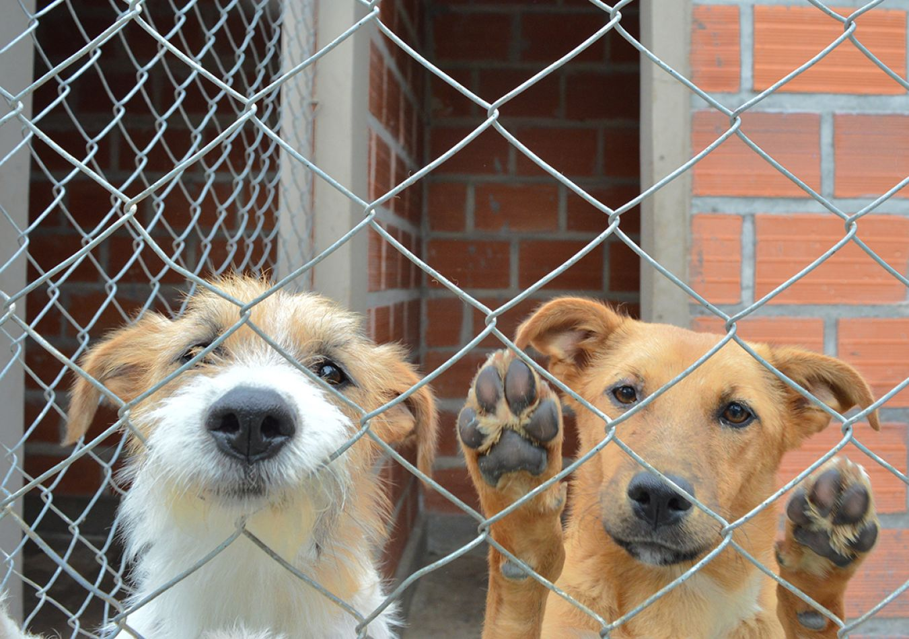

Nuestras Áreas de Impacto
En Patitas Limpias creemos que para cambiar el abandono hay que ir más allá del refugio. Conocé las iniciativas con las que involucramos a la sociedad.
Sábados de Patitas
El día más esperado de la semana. Abrimos el refugio para realizar caminatas grupales, juegos y paseos de socialización con voluntarios.
Ver más →Patitas Escolares
Educación en las aulas. Realizamos charlas y dinámicas interactivas sobre el cuidado animal y la tenencia responsable en escuelas.
Ver masVoluntariado Corporativo
Jornadas solidarias a la medida de tu empresa. Trabajo en equipo para reparar caniles, cepillar y pasar un día activo con los perritos.
Ver masDenunciar Maltrato
No mires hacia otro lado. Conocé el protocolo legal y las herramientas prácticas para realizar una denuncia formal de abandono o abuso.
Ver mas